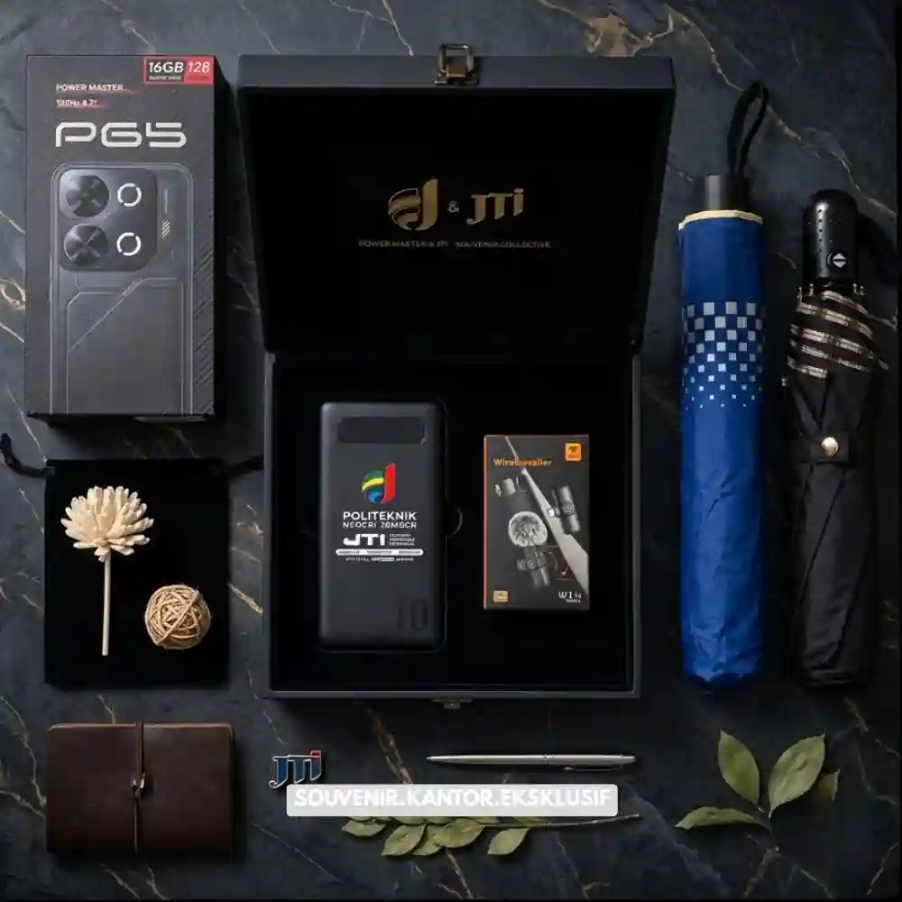
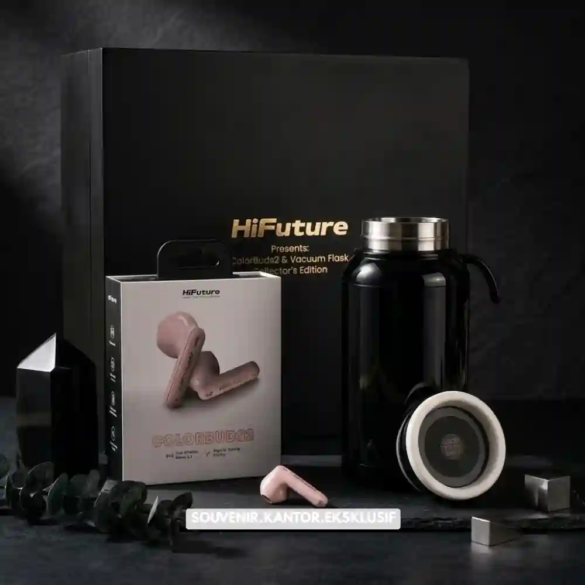

Daftar Isi
Souvenir kantor yang paling diminati umumnya berupa barang fungsional yang sering dipakai
sehari-hari, seperti alat tulis, tumbler, dan tas kanvas.
Memberikan merchandise yang bermanfaat memastikan logo perusahaan Anda selalu terlihat oleh
penerima, baik itu karyawan maupun klien.
- Barang fungsional lebih diminati dibanding barang dekoratif
- Alat tulis custom masih menjadi pilihan paling umum
- Tumbler dan botol minum populer karena bisa dipakai setiap hari
- Tas kanvas cocok sebagai souvenir multifungsi
- Merchandise elektronik ringan diminati untuk kesan lebih premium
5 Jenis Souvenir Kantor yang Paling Diminati
Berikut ini adalah 5 kategori suvenir kantor yang telah terbukti paling disukai dan sering digunakan oleh penerimanya:
1. Alat Tulis Custom
Notes, pulpen, dan pouch alat tulis dengan logo perusahaan tetap jadi pilihan paling banyak dipesan karena harganya terjangkau dan bisa dipakai di lingkungan kerja apa saja.
2. Tumbler atau Botol Minum
Tumbler custom digemari karena dipakai berulang kali, sehingga logo perusahaan lebih sering terlihat dibanding souvenir sekali pakai.
3. Tas Kanvas atau Totebag
Totebag branding cocok untuk acara seminar atau gathering karena mudah dibawa dan bisa dipakai ulang oleh penerima.

Contoh Merchandise Elektronik Ringan
4. Merchandise Elektronik Ringan
Power bank kecil, kabel data, atau flashdisk custom sering dipilih untuk klien karena terkesan lebih premium dibanding souvenir konvensional.
5. Produk Konsumsi Kemasan
Kopi, teh, atau camilan dalam kemasan branding cocok untuk souvenir singkat seperti kunjungan tamu atau rapat eksternal.
Souvenir Kantor untuk Karyawan vs Klien
Souvenir untuk karyawan biasanya lebih santai dan variatif, seperti alat tulis atau merchandise harian. Paket untuk karyawan dirancang agar fungsional mendukung keseharian bekerja.
Souvenir untuk klien cenderung dipilih dengan kualitas lebih tinggi, seperti merchandise elektronik atau produk premium, karena mewakili citra perusahaan ke pihak eksternal.

Solusi Gift Set dari Vendor Terpercaya
Butuh Bantuan Merancang Souvenir Kantor?
Tim ahli kami siap membantu Anda menyusun paket hadiah eksklusif yang menarik.
Pilihan barang akan disesuaikan dengan ketersediaan budget dan kebutuhan Anda.
Dapatkan penawaran harga terbaik untuk pesanan massal!
FAQ Seputar Souvenir Kantor
Souvenir kantor apa yang paling murah dan tetap efektif?
Alat tulis custom seperti notes dan pulpen adalah pilihan paling ekonomis namun tetap sering terlihat karena dipakai sehari-hari.
Apakah souvenir elektronik selalu lebih baik untuk klien?
Tidak selalu, tapi merchandise elektronik ringan sering memberi kesan lebih premium dibanding souvenir konvensional.
Souvenir apa yang cocok untuk acara gathering karyawan dalam jumlah besar?
Tas kanvas atau totebag cocok karena biaya per unit relatif terjangkau dan tetap fungsional untuk dipakai sehari-hari.
Maroon Souvenir
Partner Corporate Gift terpercaya di Indonesia. Berpengalaman melayani ratusan perusahaan sejak 2018.
Lihat Portofolio Kami